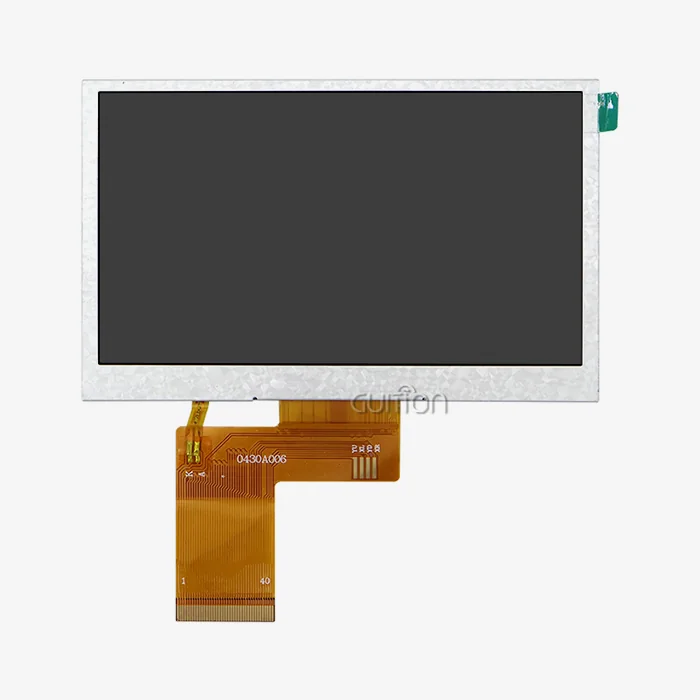

JC4827Q043N_I
Guition · Lcd character display module
JC4827Q043N_I is a 4.3" 800x480 ESP32 display board by Guition based on the none (bare display).
Features, ports & interfaces
- 8080 parallel (MCU) display
Specifications
| Parameter | Value | Source |
|---|---|---|
| Screen size | 4.3" | source |
| Resolution | 800x480 | source |
| Shape | Rectangular | |
| Display interface | 8080 parallel | source |
| Display driver | ST3401A | source |
| Touch | None | source |
| MCU family | none (bare display) | |
| Category | SPI LCD Display | |
| Active area | 95.04 × 53.86 mm | source |
| Backlight | 10 LEDs | source |
| Colors | 16.7M | source |
| Dimensions | 105.50(W) × 67.20(H) × 3.00(T) mm | source |
| Interface detail | MCU | |
| Operating temp. | -20℃ to 70℃ | source |
| Storage temp. | -30℃ to 80℃ | source |
| Vendor | Guition | |
| Viewing angle | ALL O'CLOCK | source |